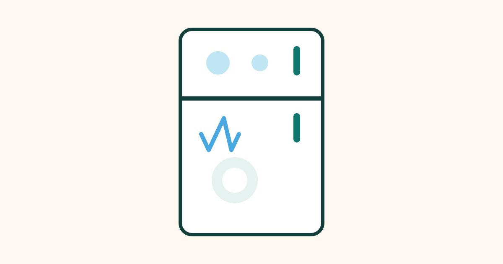

How a Refrigerator Keeps Food Cold

Open a refrigerator and you feel cold air. Close it, and your food stays fresh for days. It is easy to assume the machine is making cold, but that is not quite what happens. A refrigerator does not create cold. Instead, it moves heat from inside the box to outside the box, over and over again, using a special fluid and a cycle of squeezing and expanding that fluid.
Cold, in simple terms, is the absence of heat. If you remove heat from food, the food gets colder. A refrigerator is therefore better described as a heat-moving machine. It picks up heat from your milk, vegetables, and leftovers, carries that heat out through the back or bottom of the machine, and releases it into your kitchen. That is why the area behind a working fridge often feels slightly warm.
The Key Ingredient: Refrigerant
At the heart of every refrigerator is a refrigerant, a fluid that can easily change between a liquid and a gas at temperatures useful for cooling. It travels in a sealed loop of pipes, so it is never used up in normal operation. It simply goes around and around, changing state as it goes.
When a liquid evaporates into a gas, it absorbs heat from its surroundings. You can feel a version of this when water evaporates from your skin after a shower and you feel chilly. A refrigerator uses the same idea, but in a controlled way inside its pipes. When the refrigerant evaporates inside the fridge, it absorbs heat from the food compartment.
The Four Steps of the Cooling Cycle
The cooling cycle has four main parts, and the refrigerant passes through them in order. First, the compressor, usually a small motor at the back or bottom of the fridge, squeezes the refrigerant gas. Squeezing makes the gas hotter and raises its pressure, much like pumping air into a bicycle tyre makes the pump feel warm.
Second, the hot, high-pressure gas flows through condenser coils, usually on the back or underneath the fridge. Here it releases heat into the kitchen air and cools down enough to turn back into a liquid. This is the step where heat leaves the system.
Third, the liquid refrigerant passes through a very narrow valve, called an expansion valve. As it squeezes through this tiny opening, its pressure drops sharply, and it becomes very cold. It is now ready to absorb heat again.
Fourth, the cold liquid flows through evaporator coils inside the fridge. As it evaporates back into a gas, it absorbs heat from the air inside the fridge, and from the food. A fan often blows the cooled air around the compartments so the temperature stays even. The gas then returns to the compressor, and the cycle repeats, thousands of times a day.
Why the Fridge Has Different Compartments
Most refrigerators have a main compartment kept around 3 to 5 degrees Celsius, and a freezer kept well below zero. The same cooling system serves both, but the freezer gets the coldest refrigerant first, or has its own evaporator, depending on the design.
Temperature control is handled by a thermostat, which is simply a sensor that checks the temperature inside and tells the compressor when to run and when to rest. When the inside warms up, for example after you put warm leftovers inside or open the door on a hot day, the thermostat starts the compressor. When the target temperature is reached, it stops it. That on-and-off humming you hear is the compressor doing its job.
Why Your Fridge Uses Electricity All the Time
A refrigerator is one of the few appliances that runs all day and night, because food needs to stay cold continuously. It does not run at full power all the time, but it does need electricity to power the compressor and fans whenever cooling is needed.
Heat constantly leaks into the fridge through its walls, and especially through the door seal each time the door opens. Warm food also adds heat. The fridge must keep removing that heat, or the temperature will rise and bacteria will grow faster on food.
Common Misconceptions About Refrigerators
One common misconception is that a refrigerator makes cold air and blows it in. In reality, it removes heat from the air and food inside. The cold air you feel is simply air that has had its heat taken away.
Another misconception is that putting hot food straight into the fridge will spoil it or break the fridge. It will not break a modern fridge, but it will raise the temperature inside for a while and make the compressor work harder. Letting food cool for a short time first is gentler on the machine and safer for nearby food, but food should not be left out for hours.
People also sometimes think a fuller fridge works harder than an empty one. In fact, a reasonably full fridge often holds its temperature better, because cold food and drinks act like cold packs that help keep the air cool when the door opens. An overstuffed fridge is different, because blocked air vents prevent cold air from circulating.
Frequently Asked Questions
Why is the back of my fridge warm?
That warmth is the heat removed from inside the fridge, released through the condenser coils. It is a normal sign that the cooling cycle is working. If the coils are very dusty, they release heat less efficiently, so cleaning them occasionally helps.
Why does my fridge run constantly in summer?
In hot weather, more heat leaks in through the walls and each door opening, so the compressor must run longer to keep the inside cold. Placing the fridge away from ovens, direct sunlight, and with space around it for airflow also helps it cool more efficiently.
Should I turn my fridge off when I go on holiday?
If the fridge is empty, turning it off can save electricity, but it should be cleaned and left with the door slightly open to prevent mould and smells. If food remains inside, it is safer to leave it running, because food left at room temperature can spoil quickly.
Does a fridge cool a room if I leave its door open?
No. Leaving the door open makes the compressor work harder, and the heat it releases into the room is actually greater than the cooling from the open door. The room will get warmer, not cooler, and electricity will be wasted.
Conclusion
A refrigerator keeps food cold not by creating cold, but by moving heat. A refrigerant absorbs heat as it evaporates inside the fridge, carries it outside, and releases it through coils at the back, before starting the cycle again.
That simple loop, repeated quietly all day, slows down the bacteria that spoil food and keeps your groceries fresh. The next time you hear your fridge hum, you will know it is not just making noise. It is busy carrying heat out of your food, one cycle at a time.